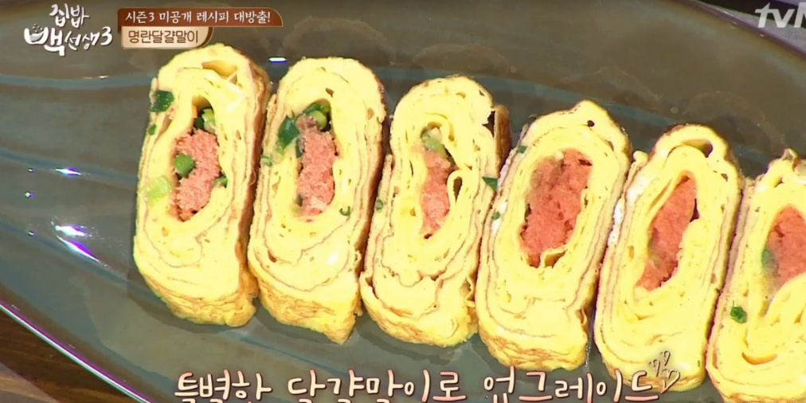
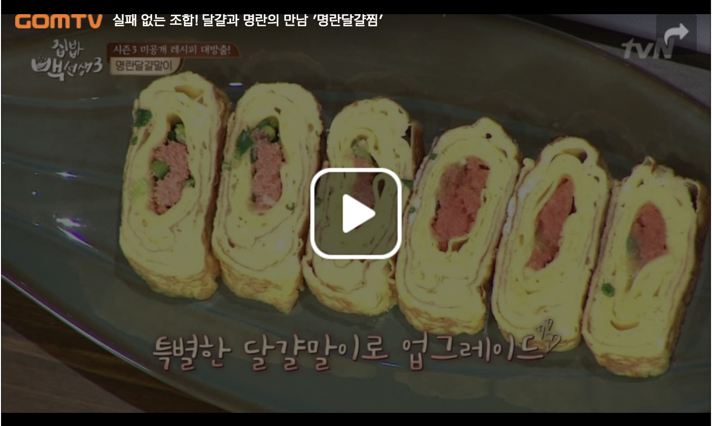

백종원의 명란달걀말이 - 집밥백선생3 42회

집밥백선생3 42회
방송일 : 2017.11.28
동영상 출처 : 집밥백선생3 - 곰TV
- 1인분
- 15분 이내
- 초급
재료
동영상

조리순서
- 볼에 달걀을 풀고 설탕 약간 넣어 달걀물 만들기!
명란젓에 충분히 간이 되어 있기 때문에 소금 간을 따로 할 필요가 없어요!
- 명란젓을 가위로 길쭉하게 잘라 준비하고
- 쪽파도 잘게 잘라 준비!
- 식용유를 묻힌 키친타올로 팬을 코팅하고~
- 약불에서 달걀물을 조금 부어 넓게 펼쳐 부친 후
- 천천히 말다가 명란젓과 쪽파를 올려 다시 말기!
- 첫 번째 달걀말이를 가장자리로 밀어두고
- 팬에 식용유를 발라준 후, 다시 달걀물 붓기!
이때, 달걀말이를 살짝 들어 새로 부은 달걀물과 접착이 되게 만들어 줄 것!
- 달걀물을 넓게 부친 다음 천천히 말아주고~
- 이렇게 동일한 방식으로 달걀을 말아 준 후
- 달걀말이를 세워 옆면까지 노릇하게 구워주면 완성!
요리 후기
- 건우은재맘
- 명란과 달걀이 무척 잘 어울리네요 계란말이에 간도 따로 필요 없고 너무 맛있었어요 손쉬운 설명으로 계란말이 쉽게 완성했네요
- 천사4
- 저도 명란젖을 반을 잘라서 계란 말이 해 먹었습니다 색달라서 맛있게 식구들이 잘먹었습니다^^♡
- 옥강이
- 식감때문에 명란젓을 잘 먹지 않았었는데 이렇게 요리해서 먹으니 정말 맛있네요~~..간도 딱 맞고^^
태크: #집밥백선생
#백주부
#백종원
#명란
#달걀말이
출서: www.10000recipe.com/recipe/6880235